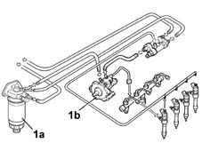

1060B Low fuel pressure supply circuit check
- Path
- Test > 10 ENGINE > 1060 DIESEL FUEL INJECTION > 1060B Low fuel pressure supply circuit check
- Kind
- test / check procedure
- Applies to
- all engines; all production periods
- Interactive page
- https://sloeber94.github.io/elrnDB-fDbl/en/#/2585330
Applies to: all engines; all production periods
Connect the pressure transducer of the Examiner/SDC diagnostic instrument between the diesel filter (1a) and the pressure pump (1b).

Applies to: all engines; all production periods
Turn the ignition on (MAR).
Check, within 30 seconds, that the pressure gauge's reading is between 1.8 and 3.0 bar.